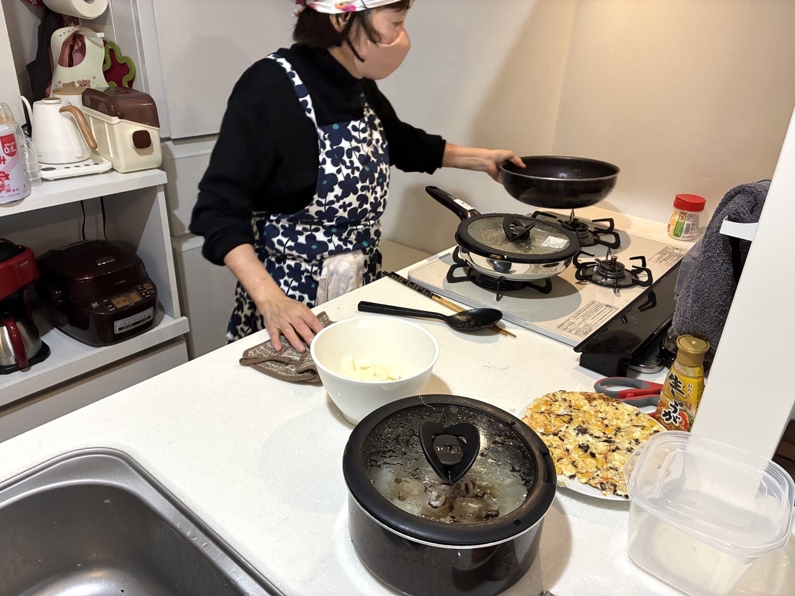

お子さまの見守りから送迎まで
通常保育、送迎、病児保育に対応。
単発利用も定期利用も相談できます。
- 仕事中や在宅勤務中の見守り
- 保育園・習い事の送迎
- 体調不良時や配慮が必要なお子さまの保育
ベビーシッターと料理代行を通して、子育てや食事づくりの負担をやわらげ、毎日を心地よく過ごせるようサポートします。


“うちの子”が安心できる時間を大切にしながら、育児と食事づくりをまとめて相談できます。
通常保育、送迎、病児保育に対応。
単発利用も定期利用も相談できます。

作り置き、下味冷凍、離乳食、幼児食、アレルギー対応まで、
日々の食事づくりをやさしく支えます。
小さな困りごとも、毎日の中では大きな負担になります。
ひとりで抱え込む前に、必要な時間だけ頼れる選択肢を。
会議、残業、通院、きょうだいの予定が重なる日に頼れる先がほしい。
栄養は気になるけれど、買い出しや献立を考える余裕がない。
少し休みたい時や急な予定の時に、安心して相談できる相手がほしい。
ご自宅で年齢や生活リズムに
合わせて過ごします。
送迎、お風呂補助、食事補助など
夕方にも。
家族で食べやすい主菜・副菜を
準備します。
月齢や食べ進みに合わせて
無理なく相談できます。
福岡市中央区・博多区・南区・早良区・東区・西区・城南区を中心に、
福岡県全域お伺いいたします。
福岡市周辺の子育て家庭に、ベビーシッター・送迎・料理代行をお届けします。

初めてのご利用で不安がある方にも
丁寧なコミュニケーションを心がけています。
成長のスピードや性格、感じ方に合わせ
その子らしく過ごせる時間を大切にします。
お預かり中の様子やサポート内容が見えるよう
同じ目線で見守ります。
希望日時、サポート内容、お子さまの年齢などを
お知らせください。
対応可否、料金、交通費、必要な準備を確認します。
ご家庭のルールやお子さまの様子、配慮事項を一緒に確認します。
安心して過ごせるよう、お子さまのペースに合わせて対応します。
作り置き、離乳食・幼児食、食材の有無などを
お知らせください。
メニューの方向性、所要時間、料金、交通費を
確認します。
ご家庭のキッチンで、日々使いやすい食事づくりを
行います。
はい。具体的な利用日が決まっていなくても、困っていることからご相談いただけます。
福岡市中央区・博多区・南区・早良区・東区・西区・城南区を中心に、
福岡県全域お伺いいたします。
内容や時間により調整できます。安全に対応できる範囲を確認してご案内します。
お子さまの状態や必要な配慮を確認したうえで、対応可否をご案内します。
まずはお気軽にご相談ください。